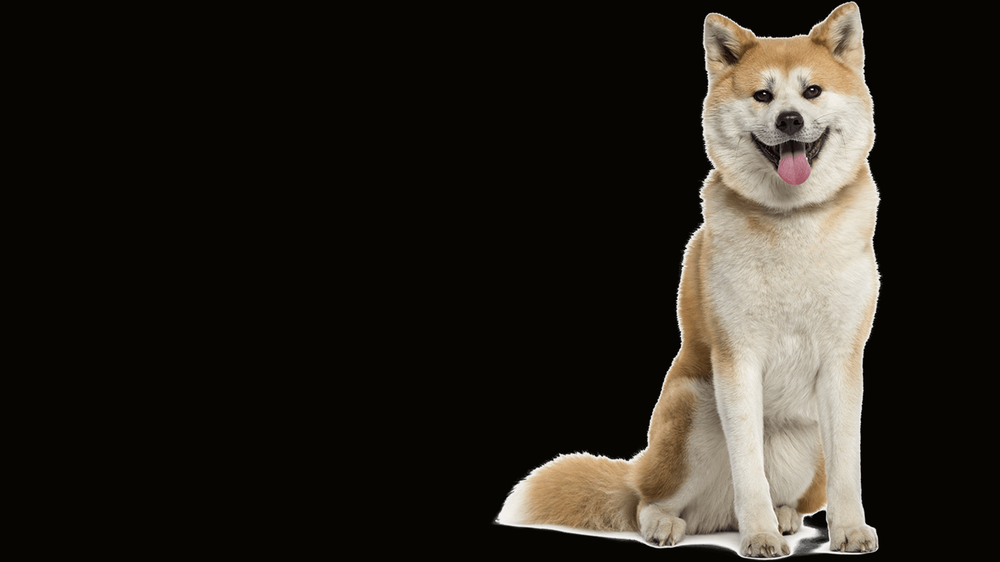

Питомцы
Наши питомцы с 2011 г. Каждый из них является нехилым чемпионом и посещал много выставок
О породе
Порода собак, появившаяся в провинции Акита на японском острове Хонсю, одна из шести в регистре японской кинологической организации по защите и сохранению исконно японских пород — Нихонкэн Ходзонкай (Nippo). Акита-ину является крупнейшей японской собакой из шпицеобразных. Долгое время использовалась для охоты в основном на крупных зверей, таких как кабан, олень и медведь. В далёком прошлом акит, которых брали на охоту, называли матаги кэн (яп. マタギ犬, «собака охотник на крупного зверя»). Слово «матаги» на древнем японском языке означает «охотник на крупного зверя», также правильным будет перевод «медвежатник». Слово «кэн», также как и слово «ину», означает «собака», но в отличие от «ину» слово «кэн» не может быть использовано отдельно, а только в словосочетании, например «матаги кэн». Именно поэтому люди-охотники (матаги) своих собак называли «матаги кэн».